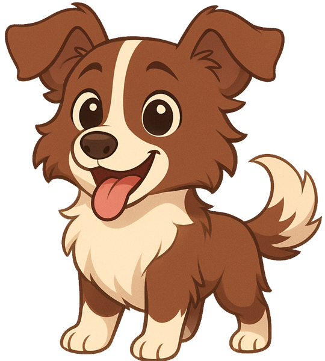
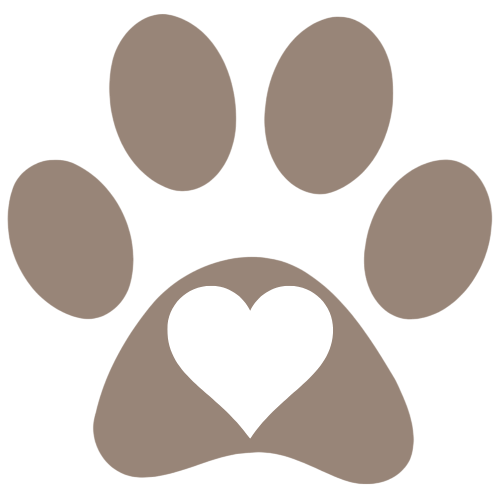

Ogni zampa merita
un futuro migliore
L'app per segnalare cani e gatti randagi o in difficoltà, aiutarli a essere soccorsi e ritrovare quelli smarriti.


Pawer è una scommessa
Un animale per strada lo vedono in tanti, ma spesso nessuno sa a chi dirlo. Pawer vuole cambiare questo: chi lo incontra lo segnala, chi lo rivede lo aggiorna, e chi può aiutare sa dove andare.
Funziona solo se la usiamo in tanti. Pawer è in fase di test: provala e dicci cosa migliorare.
Tutto quello che serve per aiutarli
Segnala un animale
Foto, colori, condizioni e posizione: bastano pochi passaggi per far sapere dove si trova.
Animali smarriti
Hai perso il tuo animale? Pubblica un annuncio: chi è in zona riceve una notifica e può chiamarti.
Mappa
Le segnalazioni aperte della tua regione e la navigazione fino al punto.
Avvistamenti
Se rivedi un animale segni la nuova posizione: la cronologia la aggiorna tutta la community.
Strutture
Rifugi e numeri utili della tua regione, da chiamare direttamente dall'app.
Notifiche
Nuove segnalazioni e animali smarriti della tua zona, e gli avvistamenti di quelli che segui.
Tre passi, un soccorso
Lo vedi
Incontri un cane o un gatto randagio, ferito o smarrito.
Lo segnali
Scatti una foto, descrivi come sta e la posizione si compila da sola.
Lo seguiamo
La segnalazione compare sulla mappa e ogni nuovo avvistamento ne aggiorna la posizione, finché qualcuno non lo soccorre.
Come installarla
Su Android
- Scarica l'APK sul telefono e aprilo.
- Se il telefono lo chiede, consenti "Installa app sconosciute" per l'app da cui lo stai aprendo (browser, WhatsApp, File…).
- Tocca Installa, poi apri Pawer.
- Registrati con la tua email o con Google e scegli la tua regione.
Durante l'installazione Android potrebbe avvisarti che l'app non è sicura: lo segnala per tutte le app installate fuori dal Play Store, dove Pawer per ora non c'è. Pawer usa solo i dati descritti nell'informativa privacy. Fotocamera, posizione e notifiche vengono chieste solo quando servono.
Su iPhone
In prova
- Apri pawerapp.web.app con Safari, o inquadra il QR code in fondo.
- Tocca Condividi → Aggiungi alla schermata Home.
- Apri Pawer dall'icona come una normale app.
Funziona anche dal browser del computer, allo stesso indirizzo.
In memoria di Orsetto
Pawer è nata per Orsetto, un pelosetto marrone e bianco trovato per strada. Era la bontà e la purezza fatte cane, di una fedeltà immensa fin dal primo momento. Anche se per poco, ha reso migliore la vita di tutta la sua famiglia.
Questa app è il modo di ricambiare tutto quello che ha dato: aiutare altri cani e gatti come lui a trovare qualcuno che si prenda cura di loro.